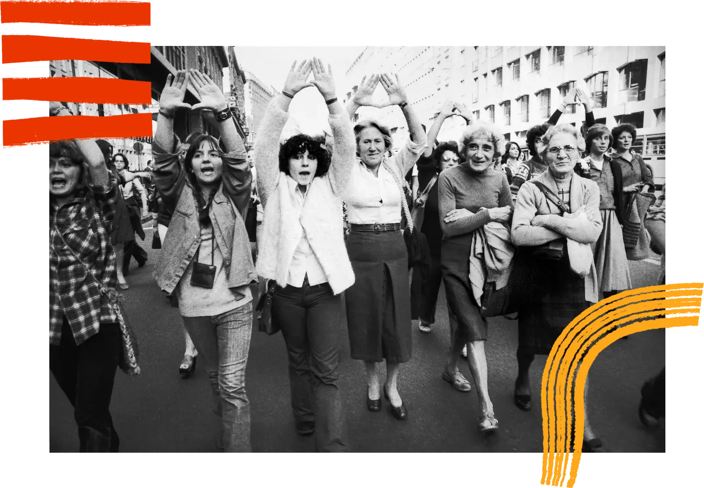
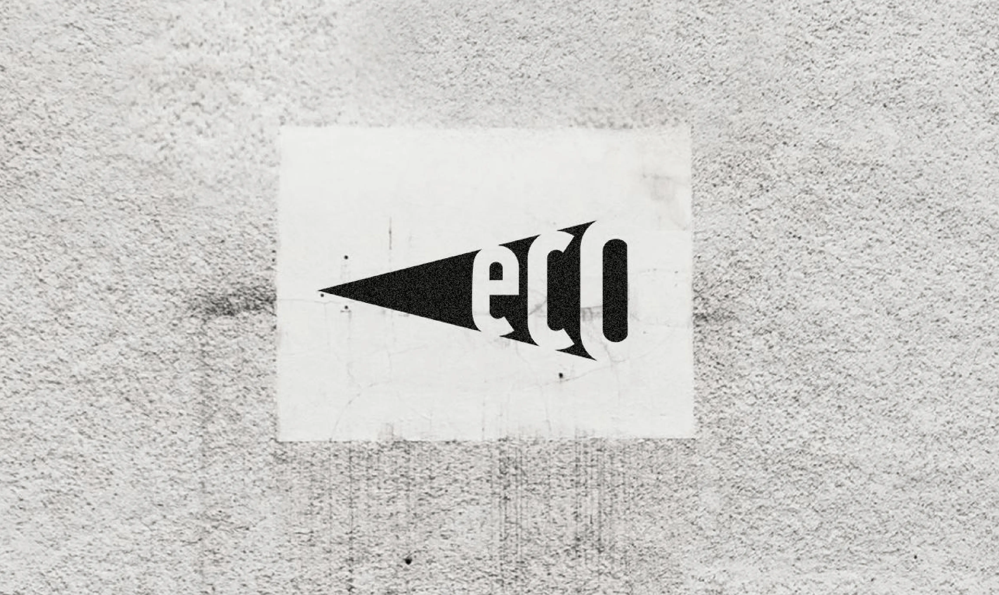
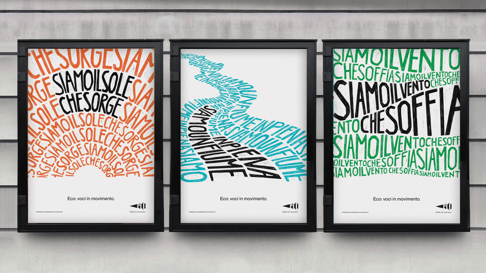
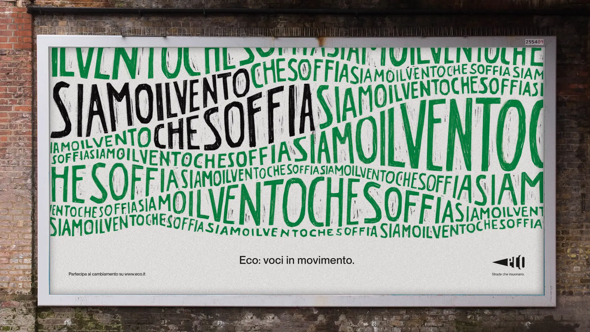

Eco è un sistema che rende lo scendere in piazza più coinvolgente ed efficace attraverso i nuovi mezzi di comunicazione. Di fronte a cittadini sempre più rassegnati all’idea che le cose non possano cambiare e distanti dalla dimensione collettiva, il progetto recupera la tradizione dello “scendere in piazza” come gesto di partecipazione attiva.



